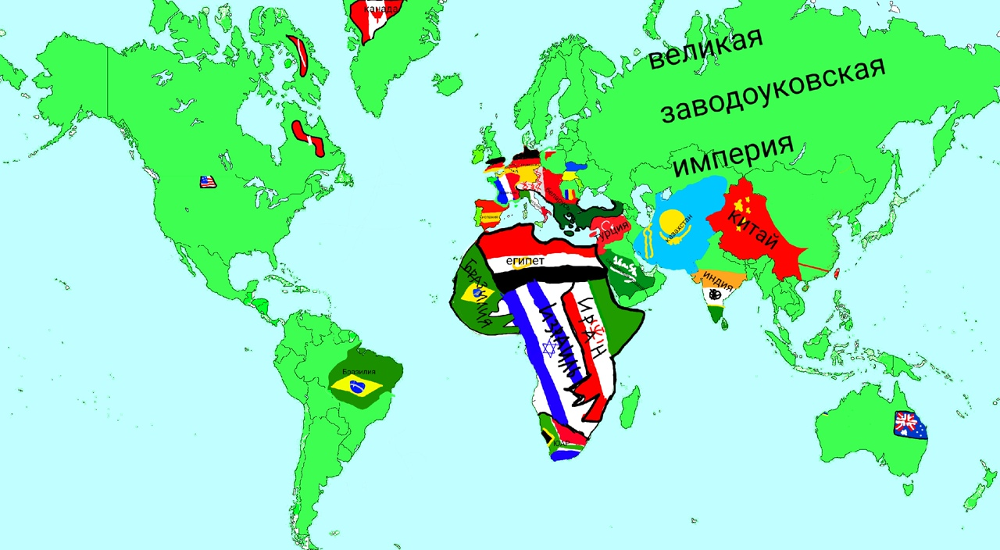
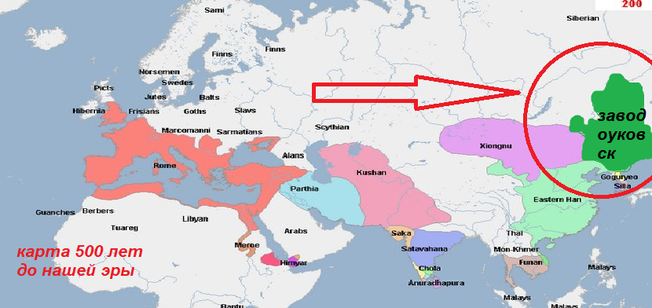
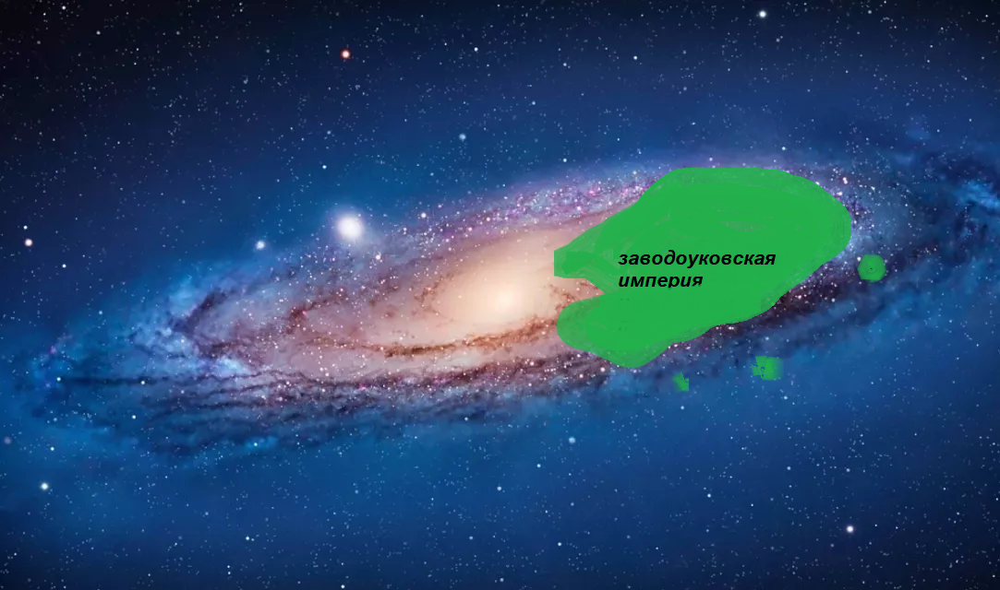

Заводоуковская империя
Вернуться назад
Заводоуковская империя щас

Великая Заводоуковская Империя образовалась в 500 году до н.э. ранее называлась заводоуковском но после прихода к власти влада III великого и алексея II мудрого
обрела звание империи также она значительно расширилась на целых 9993234540542002212177799932% И занимает более 70% земного шара и одну третью часть млечного пути
на данный момент империя до сих пор не развалилась и будет вечно существовать вскоре захватив всю вселенную из за ее мощи все будут бояться ее и отдавать свою територию лишь бы не били!!!!
Интересный факт: заводоуковская империя это второе название россии официально используется россия а на самом деле заводоуковская империя

Заводоуковская империя на млечном путе

Этв всё никакой не прикол это на самом деле столько ну стольких размеров великая заводоуковская империя(или же россия)